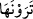

fiilinin olmaması da muhtemeldir. Çünkü Allah Teâlâ gökleri kudreti ile yüksekte
tutmaktadır. Sanki O’nun kudreti göklerin direkleri gibi olmaktadır. Ya da gökleri
yüksekte tutan adâlettir. Çünkü gökler, yâni ulviyyât ve süfliyyât adâletle ayakta durur.
Gök ve yer adâletle ayaktadır
Adâletsiz şahlar yüzünden yerle bir olur
Eğer çadırın direği yerinde olmazsa
Nasıl çadır direksiz ayakta durur
“yükselten,” Allah gökleri öyle yüksek yaratmıştır ki göklerle yer arasında beş yüz
senelik yürüme mesafesi vardır. Yoksa bu ifade, ‘gökler yerin üzerindeydi de sonra
Allah yükseltti’ anlamında değildir.
“  (Görebileceğiniz)” ifadesinin, yeni başlayan bir cümle olması da câizdir. O
zaman sanki “Göklerin direksiz olarak yükseltilmesinin delili nedir?” diye sorulmuş ve
cevâben “İşte siz göklerin direksiz olduğunu görüyorsunuz!” denilmiştir.
“Sonra Arş’a istivâ eden,” Buradaki “sonra” kelimesi, bu iki yaratılış arasındaki
üstünlük ve farklılığı açıklamak içindir: Çünkü arş göklerden daha üstündür. Yoksa
âyetteki “sonra” kelimesi, zaman bakımından bir sonralık ifade etmek için değildir.
Çünkü arş göklerden önce yaratılmıştır.
Arş, pâdişahın tahtı demektir. Buradaki mânâsı ise var olan en büyük mahlûktur.
Mahlûkâtın en büyüğüdür, altında tatlı su vardır. Nitekim Allah Teâlâ: “O’nun Arş’ı su
üzerindeydi.” (Hûd 11/7) buyurmuştur. Bu su, büyük bir okyanustur ki ne kadar büyük
olduğunu Allah’tan başkası bilmez.
Bahru’l-ulûm’da belirtildiğine göre “istivâ etti” üstten ona muttali oldu demektir.
Bir hadiste şöyle buyrulur: “Allah Teâlâ Firdevs cennetinin arsasını kudret eliyle
sıktı. Sonra onu saf altından kerpiç ve hoş kokulu miskten kerpiçle inşâ etti. Sonra
orada her tür hoş kokulu, güzel tatlı meyveyi yetiştirdi. Bu meyve ağaçlarının
arasından nehirler fışkırtıp akıttı. Sonra da Rabbimiz arşına istivâ edip bu güzelliğe
nazar ederek şöyle buyurdu: “İzzet ve celâlime yemin ederim ki sana; şarap içenler,
zinâda ısrar edenler, deyyûslar, koğucular, başkasını kötüleyenler, kefen soyucular ve
hâinler giremez.”[101]
“Sonra Arş’a istivâ etti” ifadesini, Beyzâvî şöyle açıklıyor: Allah arşına koruma ve
tedbiriyle istivâ etti. Buna göre Allah’ın arşa istivâsı, direksiz olarak yüksek yarattığı
şeylerde hükümdarlık ve tasarruf hakkını tamamen eline almaktan ibârettir. Bir sultan
tahtına hiç oturmamış olsa da sultan olduğu zaman “Tahta oturdu” denir.
Şeyhzâde ise şöyle der: “Öyle görünüyor ki, “sonra” kelimesi, herhangi bir sonralık
mânâsı düşünülmeksizin sırf atıf ve sıralama mânâsı ifade ediyor. Çünkü Allah
Teâlâ’nın
yükselttiği
bu
göklerde
tasarrufu
elinde
bulundurması,
bunları
yükseltmesinden sonra değildir.
Aslında buradaki istivâdan maksad, nefsi ve zâtı îtibariyle olmaksızın yüce Allah’ın